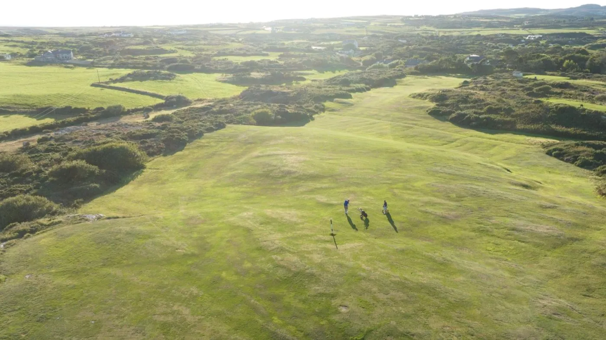
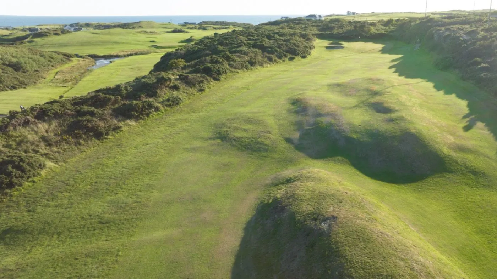

25Aug 2027Wednesday
Ladies Open: Pinehurst Chapman Pairs
Ladies · Members £10, visitors £40

“A nicely presented Braid heathland course which builds to a challenging finish.”
Greg Webber, NCG Top 100s. Ranked fourth in North Wales.
“…the course was in fantastic shape and the greens immaculate. Would highly recommend.”
Neil Q., Google review. Rated 4.5 from 264 reviews.
Holyhead Golf Club is at Trearddur Bay on Holy Island, Anglesey. The course was designed by five-time Open champion James Braid and opened in 1912. Visitors, societies and new members are always welcome.
Visitors are welcome in the club’s opens. Entries are taken online through HowDidiDo.
Ladies · Members £10, visitors £40
More opens are added through the year. See every open on HowDidiDo

Steve Elliott, PGA Professional
More than 30 years’ coaching experience, with lessons for every level and a Titleist and Mizuno custom fitting centre in the pro shop.
Real reviews from Google, where the club is rated 4.5 out of 5.
“Really great golf course. I was away for the week in Anglesey and thought I’d give it a try. Got the first tee of the day, 7am, so had the course to myself. It’s a tough course, with some blind tee shots and greens, and was windy when I played but the course was in fantastic shape and the greens immaculate. Would highly recommend.”Read more
“What a beautiful golf course. The pro shop were so friendly and helpful. The course was amazing, so well looked after. The head green keeper and his staff should give themselves a pat on the back.”Read more
“Challenging course for a beginner like myself but course in immaculate condition after the tough winter we’ve had, greens are like glass. Every member I’ve come across and club pro & staff have all been very friendly.”Read more
“Nice well maintained course, even in this dry weather. Greens were looked after. If you want a more challenging course then this is ideal…”Read more
Ask the clubAnswers from the club's own information